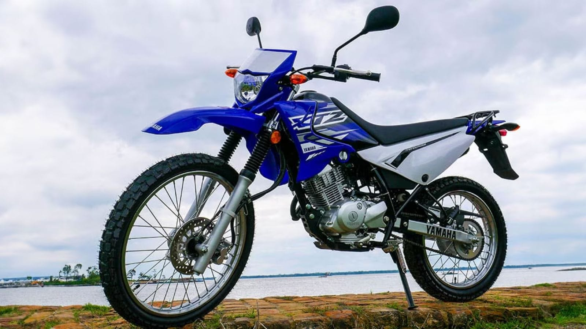
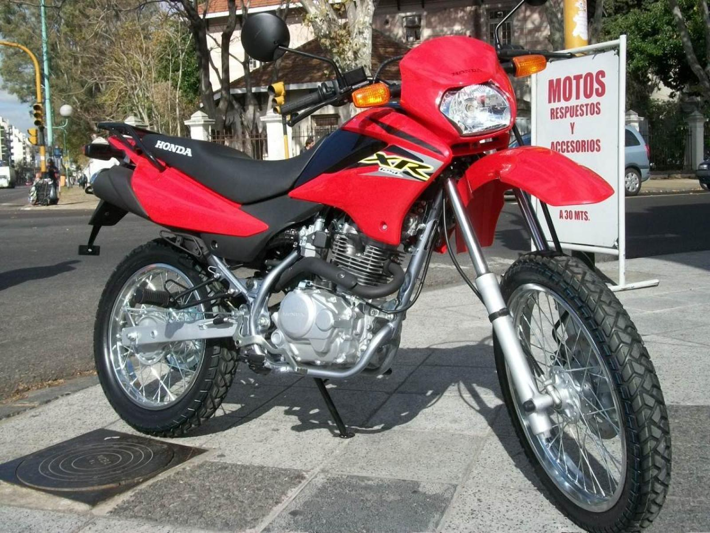
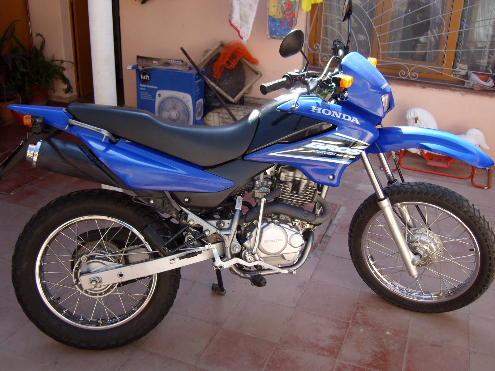
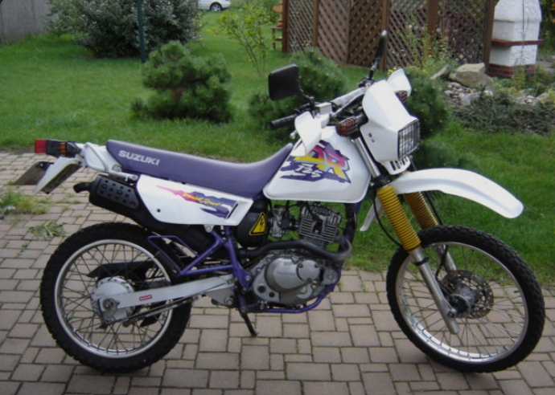
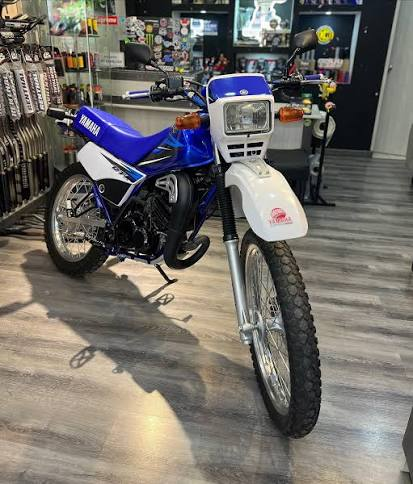

Las motos doble propósito son aquellas que se pueden usar con la misma comodidad en la ciudad y en caminos de tierra, trochas o carreteras en mal estado. En un país como el Perú, donde el asfalto , la grava y el barro suelen alternarse en un mismo recorrido, este tipo de moto se ha vuelto una de las más prácticas y buscadas. Este portal presenta cinco modelos de 125 cc que marcaron a varias generaciones de motociclistas y que siguen siendo una referencia cuando se habla de aventura sobre dos ruedas.
El título del portal, “Modelos que hicieron historia”, resume la idea central. No se trata solo de motos pequeñas, sino de modelos que por su resistencia, su precio accesible y su facilidad de mantenimiento se ganaron un lugar en la memoria de quienes las usaron para trabajar, viajar o iniciarse en el mundo de las motos.
Una moto doble propósito, también llamada dual-sport o trail, combina rasgos de una moto de calle y de una moto de campo. De la moto de calle toma elementos como las luces, el tablero, el sistema eléctrico y lo necesario para circular legalmente. De la moto de campo toma una suspensión de mayor recorrido, una posición de manejo más erguida, mayor altura libre al suelo y neumáticos con taco más marcado.
Esta mezcla tiene un costo. No son tan cómodas en carretera como una moto pensada para viajes largos, ni tan precisas en terreno extremo como una moto de enduro o de motocross. Su gran ventaja es la versatilidad: con una sola moto, una persona puede ir a estudiar, a trabajar y también salir de paseo por caminos rurales el fin de semana.


La cilindrada de 125 cc es una de las más populares en este tipo de moto por varias razones. Primero, el precio de compra suele ser menor que el de modelos de mayor cilindrada. Segundo, el consumo de combustible es reducido, lo que ayuda a ahorrar en recorridos largos. Tercero, su peso contenido las hace fáciles de manejar y de levantar en caso de caída, algo importante para quien empieza. Cuarto, el mantenimiento es sencillo y los repuestos suelen conseguirse con facilidad.
Por estas razones, las 125 cc son muchas veces la primera moto de campo o de uso mixto de una persona. Su limitación principal es la potencia: no están pensadas para llevar mucha carga ni para mantener altas velocidades en carretera durante horas.
Las motos de uso mixto existen casi desde el inicio del motociclismo, pero el concepto moderno de doble propósito suele ubicarse a finales de la década de 1960, cuando Yamaha lanzó la DT-1, considerada una de las primeras motos de campo fabricadas en serie para el público general. Poco después, otras marcas japonesas como Honda, Suzuki y Kawasaki presentaron sus propios modelos, y la categoría creció con rapidez.
Con el tiempo, estos modelos se fabricaron en versiones más pequeñas y económicas. En países como Brasil se desarrollaron motos de 125 cc pensadas para el uso diario y el trabajo, que luego se vendieron en otros mercados de Latinoamérica, entre ellos el peruano. Así nacieron varios de los modelos que hoy se recuerdan como clásicos de la categoría.
Cada página secundaria sigue la misma estructura: presentación del modelo, historia y contexto, ficha técnica, ventajas, limitaciones, uso recomendado y conclusión. Así puedes comparar los modelos con facilidad.